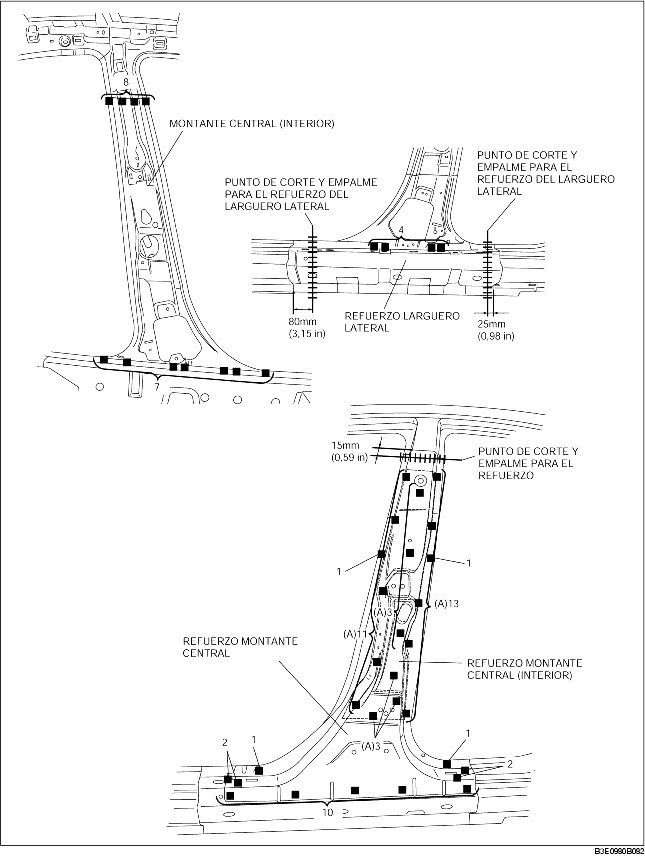
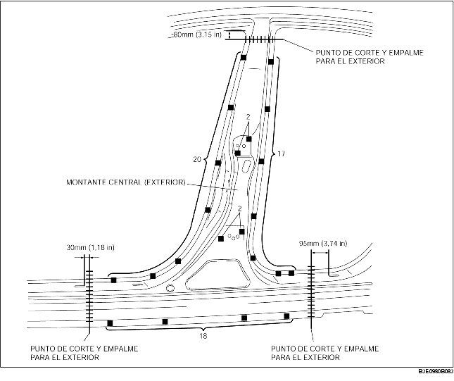

1. Cuando se efectua el corte y empalme de los componentes nuevo y actual, instalar provisionalmente el componente nuevo, luego medir y ajustar la carrocería según necesidad para conformarse a las dimensiones estándar.
2. Antes de instalar los nuevos paneles, crear los orificios para la soldadura.
3. Instalar según el orden siguiente: panel interior, refuerzo y panel exterior.
4. Soldar los 30 puntos indicados por (A) e instalar el refuerzo del montante central (interior) al refuerzo del montante central.
5. Instalar los nuevos componentes provisionalmente y asegurarse que se junten perfectamente.

